karachi
Karachi, city and capital of Sindh province, southern Pakistan. It is the country’s largest city and principal seaport and is a major commercial and industrial centre. Karachi is located on the coast of the Arabian Sea immediately northwest of the Indus River Delta.
tourist location
Quaid’s Mausoleum
The pure white marble facade of the museum is not a sight to miss when in Karachi. The Mausoleum is a resting place for the country’s founder, or in Urdu Quaid, Mohammad Ali Jinnah. Its minimalist dome over a cube design was inspired by the Samanid Mausoleum in Uzbekistan.
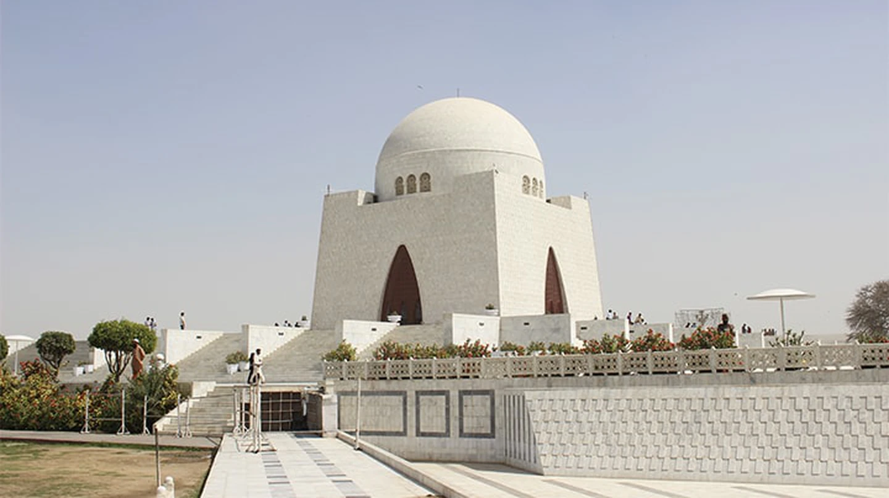Churna Island and its water sports
If you love all things sea, then Churna Island, which is only a two-hour drive away from central Karachi, is a must-visit. Here is where you can swim, snorkel and scuba dive around the island’s reef and gaze at a multitude of sea creatures, from fish to snakes and turtles that inhabit its warm waters.
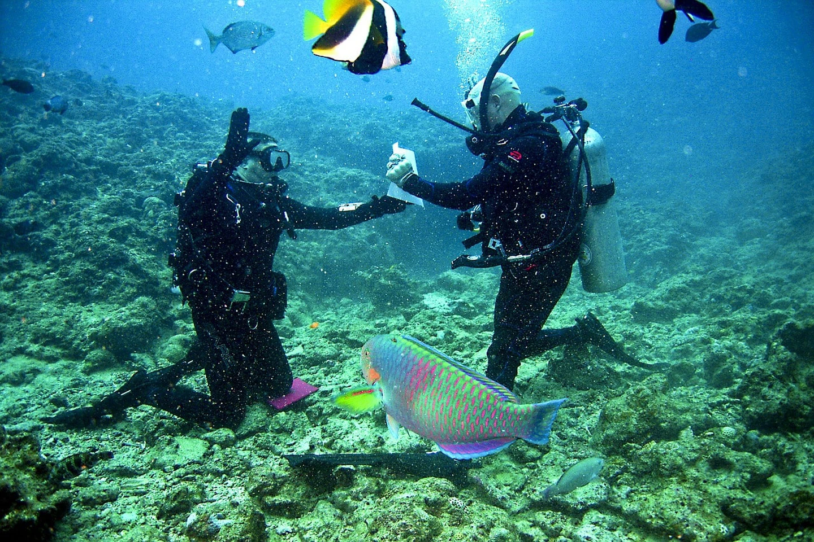Mohatta Palace
Art, architecture and culture come to play at this 20th-century palace built by a Hindu Prince in 1925. Used today as an art gallery and museum, there are always thought-provoking exhibitions happening at this grand building surrounded by trees and Renaissance-style statues. The Rajasthani-style design of this structure is a sight to behold.
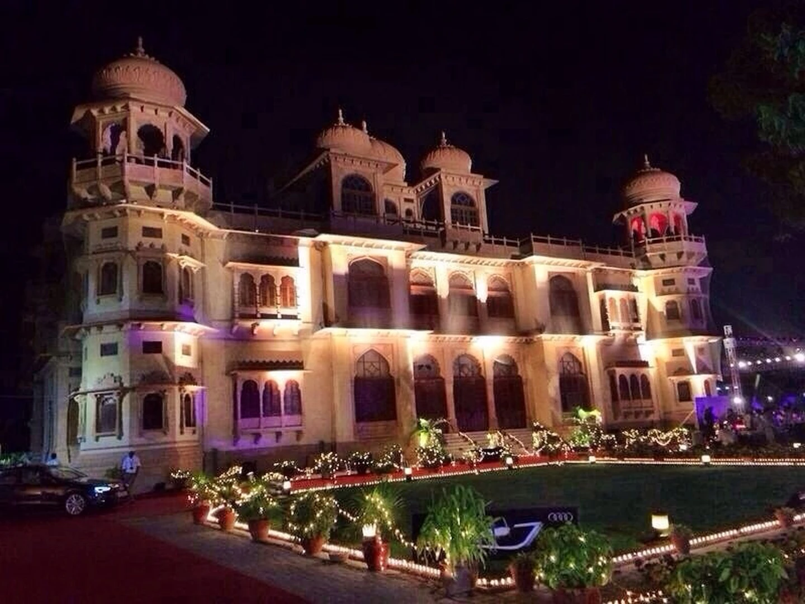Turtle spotting at Turtle Beach
Not only are winters a great time to visit Karachi because of its mild cold weather, but also because it’s the time when you can spot turtles at Turtle Beach. This beach is home to green sea turtles that come out to lay their eggs in the sands. It’s also a good picnic spot.
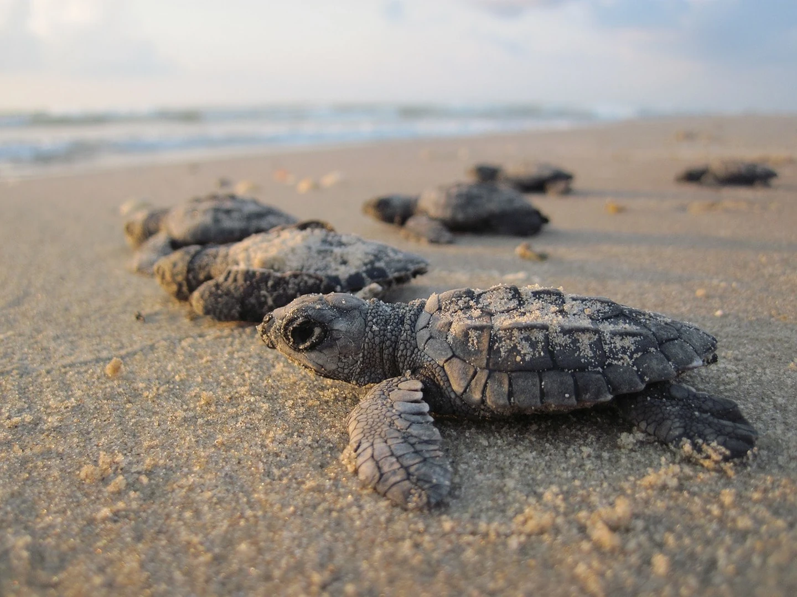PAF Museum
If you like aircrafts and all things aeronautic, then the Pakistan Air Force Museum is a must-visit. It is home to many aircrafts, like planes and jets and radars and weaponry that have been used by the Pakistan Air Force throughout the years, especially during the 1965 war with India. Nearby, there are World War 1 and 2 scale models and some modern planes on the display as well. There are also food options in the main park and many places to relax in the gardens.
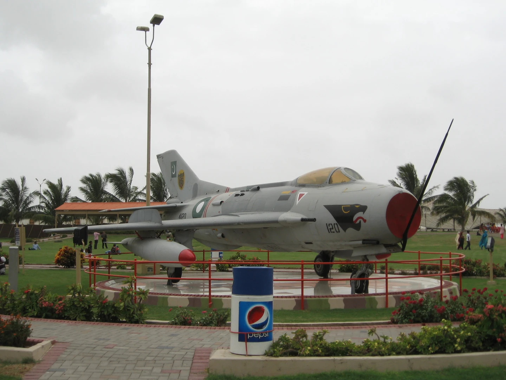industries
Shipyard
Karachi Shipyard and Engineering Works Limited is the oldest Heavy Engineering Works of Pakistan which is catering for its Ship Building, Ship Repairing, Submarine/Warship Construction and Heavy/General Engineering requirements. KSEW was established in early 1950s as a project of PIDC. It was incorporated as a public limited company in 1957. The shipyard spread over an area of 29 hectares (71 acres). KSEW has a large Ship Building Hall, three Ship Building Berths, two Dry Docks, three Foundries (Iron, Steel & Non-Ferrous), Fabrication Shops, one machine shop and other supporting facilities like Carpentry, Pipe Fitting and Light Steel Fabrication Shop. KSEW is working as an autonomous commercial organization under the Ministry of Defense, Government of Pakistan.
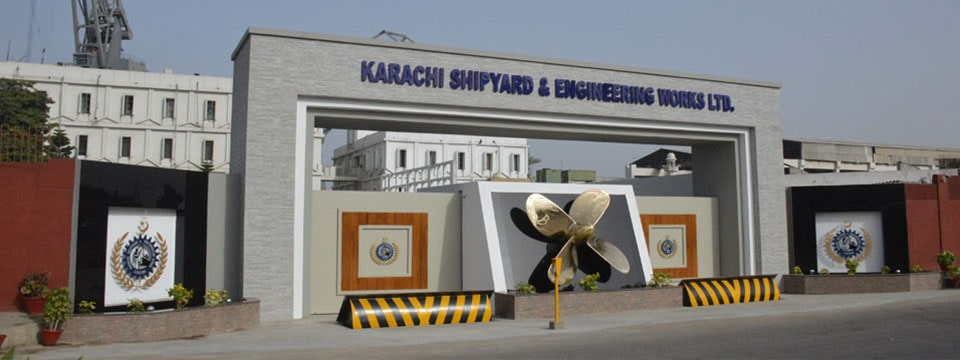Steel Mills
Pakistan Steel Mills is the current largest industrial corporation undertaking having a production capacity of 1.1—5.0 million tonnes of steel and iron foundries. Built with the contributions of the Soviet Union in the 1970s, it is the largest industrial mega corporation complex, vastly expanded in an enormous dimensions construction inputs, involving the use of 1.29Mn cubic meters of concrete; 5.70Mn cubic meters of earth work; and contains ~330,000 tonnes of heavy machinery, steel structures and electrical equipment. Tuwairqi Steel Mills Limited is a vertically integrated multinational Steel mill in Karachi. An environmentally friendly and established by a private sector, the steel mill is co-financed by the Al-Tuwairqi Holdings (Saudi Arabia), POSCO (South Korea) and Arif Habib Steel Mill (Pakistan), and currently aiming to compete against the Pakistan Steel Mills (PSM) at the Karachi Stock Exchange (KSE) indexes. The steel mills is well expanded over an area of 220 acres (0.89 km2) at Bin Qasim, Karachi and employs the world's most advanced DRI (Direct Reduction of Iron) technology of the MIDREX process owned by Kobe Steel of Japan.
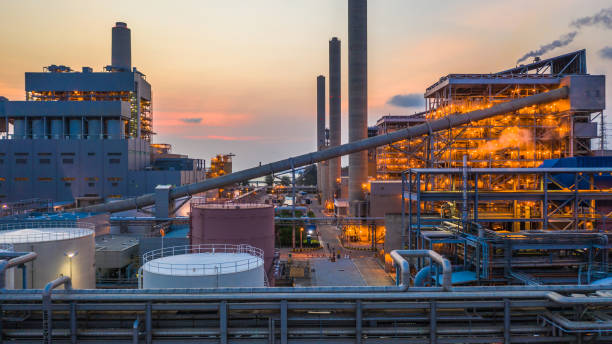Automotive
The major world automakers have set up assembly plants in Karachi with joint ventures with local companies these include Toyota, Honda, Suzuki and Nissan Motors. While Pak Suzuki success in Pakistan owes to lack of options among the buyers however Pak Suzuki is a major assembler in Pakistan providing jobs and also exporting vehicles to various countries. Pak Suzuki Motors is a Pakistani subsidiary of Japanese automaker Suzuki has assembly plant in Karachi.It is the Pakistani assembler and distributor of cars manufactured by Suzuki and its subsidiaries and foreign divisions. Currently Pak Suzuki is the largest car assembler in Pakistan.
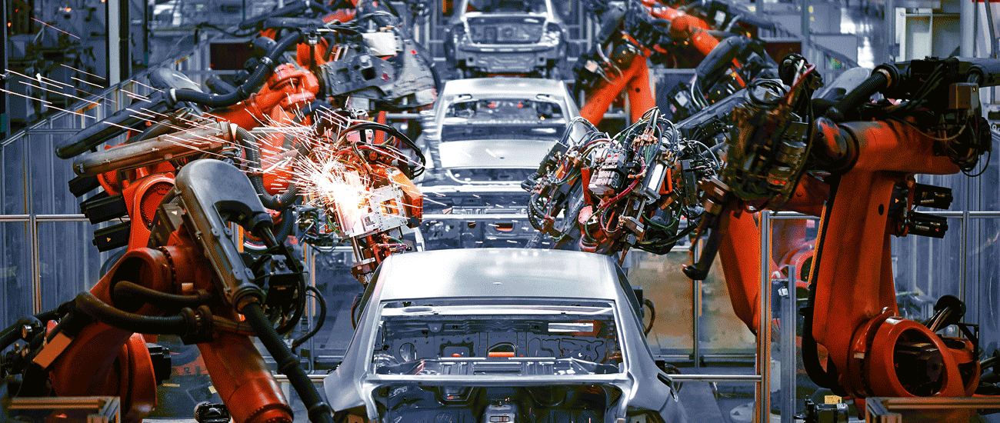karachi history
The area of Karachi (Urdu: کراچی, Sindhi: ڪراچي) in Sindh, Karachi has a natural harbor and has been used as fishing port by local fisherman belonging to Sindhi tribes since [[prehistoryArchaeological excavations have uncovered a period going back to Indus valley civilization which shows the importance of the port since the Bronze Age. Port city of Banbhore was established before Christian era which served as an important trade hub in the region, the port was recorded by various names by the Greeks such as Krokola, Morontobara port, and Barbarikon, a sea port of the Indo-Greek Bactrian kingdom. and Ramya according to some Greek texts.The Arabs knew it as the port of Debal, from where Muhammad bin Qasim led his conquering force into Sindh (the western corner of South Asia) in AD 712. Lahari Bandar or Lari Bandar succeeded Debal as a major port of the Indus it was located close to Banbhore, in modern Karachi. The first modern port city near Manora Island (now Manora Peninsula) as established during British colonial Raj in the late 19th century.
karachi inhabitants
Though the Karachi region has been inhabited for millennia, the city was founded as the fortified village of Kolachi in 1729. The settlement drastically increased in importance with the arrival of British East India Company in the mid 19th century. The British embarked on major works to transform the city into a major seaport, and connected it with their extensive railway network.By the time of the Partition of British India, the city was the largest in Sindh with an estimated population of 400,000. Following the independence of Pakistan, the city's population increased dramatically with the arrival of hundreds of thousands of Muslim refugees from India. The city experienced rapid economic growth following independence, attracting migrants from throughout Pakistan and South Asia. According to the 2017 census, Karachi's total population was 16,051,521 and its urban population was 14.9 million. Karachi is one of the world's fastest growing cities, and has communities representing almost every ethnic group in Pakistan. Karachi is home to more than two million Bangladeshi immigrants, a million Afghan refugees, and up to 400,000 Rohingyas from Myanmar.
some famous inhabitants of karachi
Moin Akhter
TV, film and stage actor, comedian and host
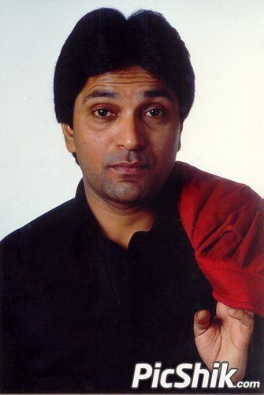Adeel Hussain
Tmodel, actress
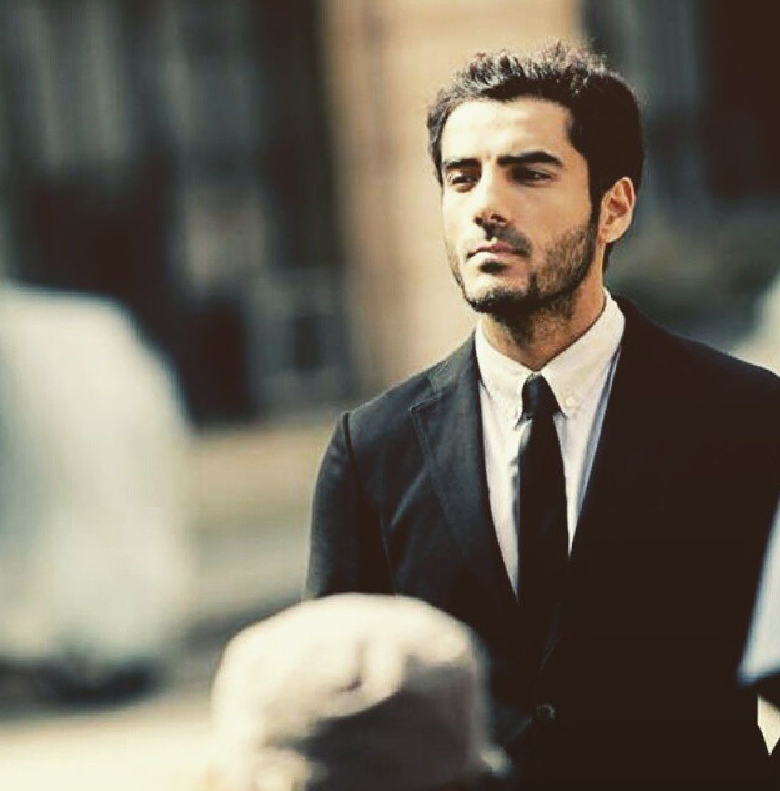Talat Hussain
Ttelevision actor, director
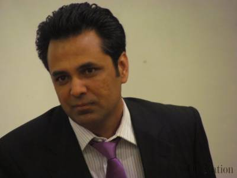FESTIVALS IN KARACHI
The best things to do in the world include attending top-notch festivals in Karachi. Be it a rocking music festival or scrumptious food festival in Karachi, you will have a gala time of your life with a few of your close friends or your family. With the best of fun, entertainment, and food, the experience in festivals lets the enthusiasts immerse in the local culture and vibe. Ranging from the biggest outdoor beach parties to crazy music festivals, the festivals fall under various categories to suit everybody’s tastes. If you are looking for the best events and festivals in Karachi listed on one platform - we have you covered. Immerse yourself in the "mega dance festivals, electrifying music festivals, Karachi Eat food festivals, karachi theatre & film festival" quirky local festivals and more with us!
why karachi is special?
Situated on the Arabian Sea, Karachi serves as a transport hub, and is home to Pakistan's two largest seaports, the Port of Karachi and Port Bin Qasim, as well as the busiest airport in Pakistan. ... Karachi is built on a coastal plains with scattered rocky outcroppings, hills and coastal marshlands.